Keurslager in Eerbeek, sinds 1992
Met meer smaak genieten.
Vers vlees, worst uit onze eigen worstmakerij, wild en dry aged. En voor uw feest een barbecue, buffet of partypan, bij u thuis bezorgd.
Kloosterstraat 4, Eerbeek
Maandag tot en met vrijdag 08:00 tot 18:00, zaterdag 08:00 tot 16:00
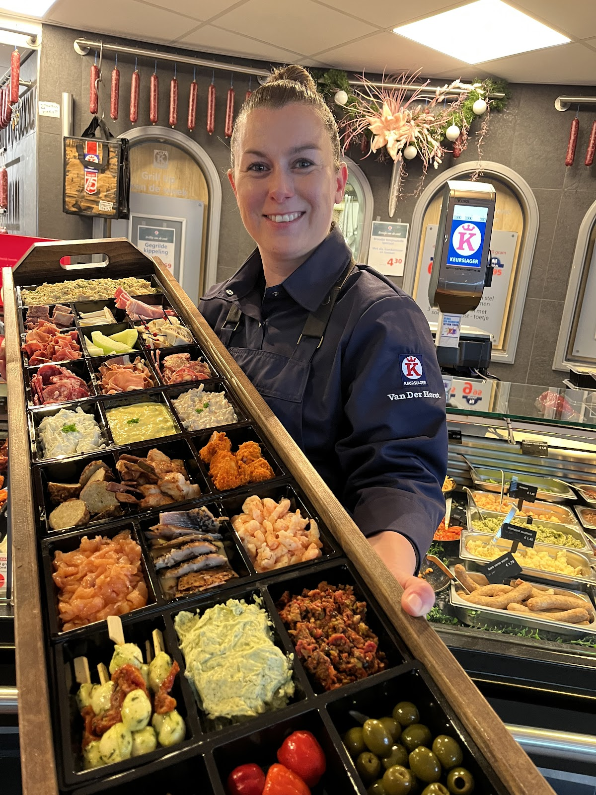
4,5
uit 122 Google-reviews
Wat mag het zijn?
Uit de winkel, uit onze eigen keuken of bezorgd voor een feest. Bestellen kan telefonisch of per mail.
-
Barbecue
Meer dan 50 barbecue-opties in de winkel, of een samengesteld pakket dat u ophaalt of laat bezorgen.
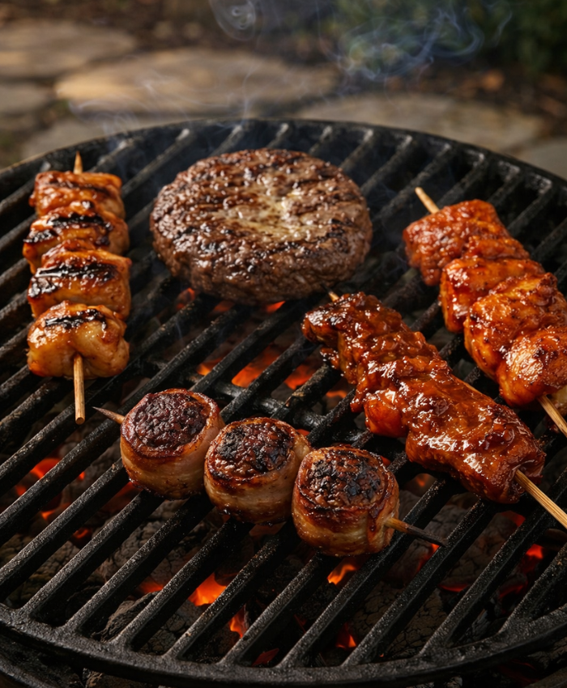
-
Buffetten en catering
Lunches, buffetten en hapjes uit onze eigen keuken, bezorgd of af te halen. Heeft u een speciale wens of een allergie? Vraag het ons.
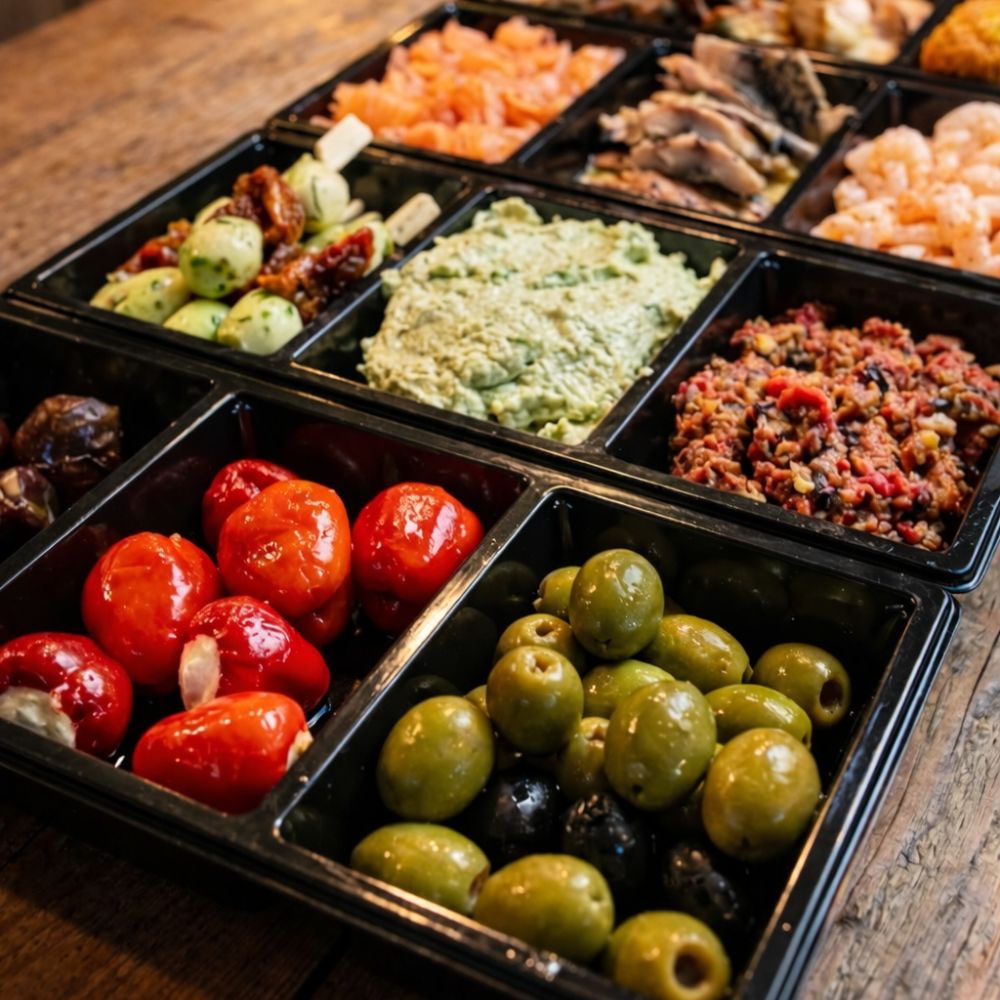
-
Partypannen
Een kleine of grote party pan, gevuld en klaar om op tafel te zetten. Stekker erin en iedereen schept zelf op.
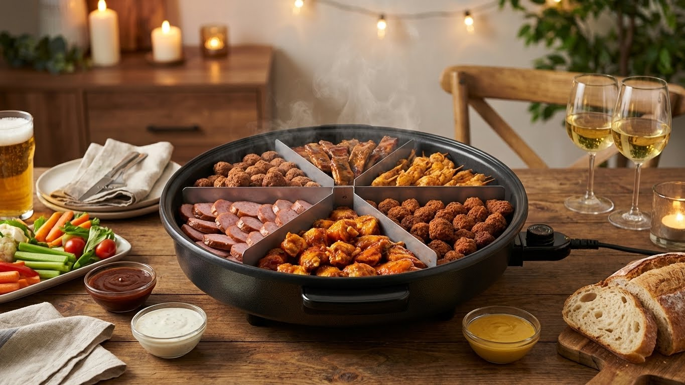
-
Gourmet en fondue
Gourmet, smulsteen, smulpot en fondue, per 3 of 4 personen samengesteld.
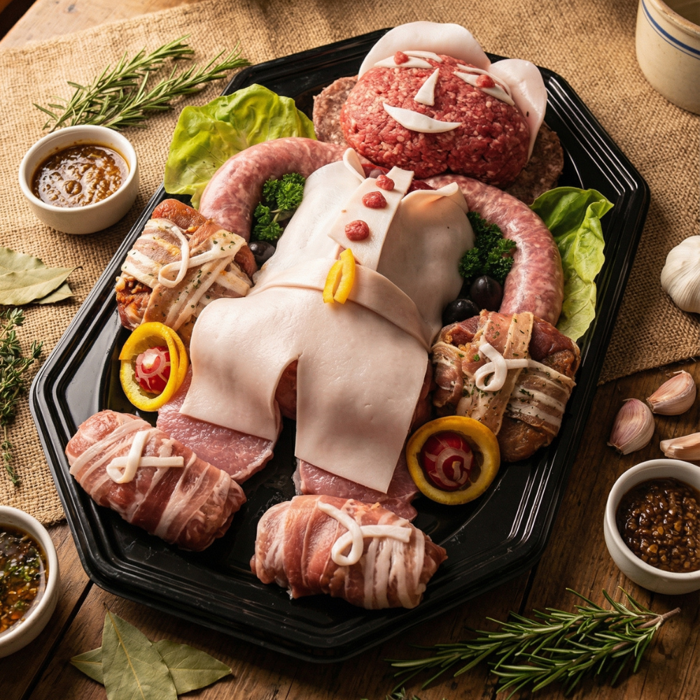
-
Maaltijden
Elke dag verse maaltijden uit eigen keuken. Haal ze in de winkel of laat ze bezorgen in Rheden, Doesburg, Eerbeek, Dieren en omgeving.
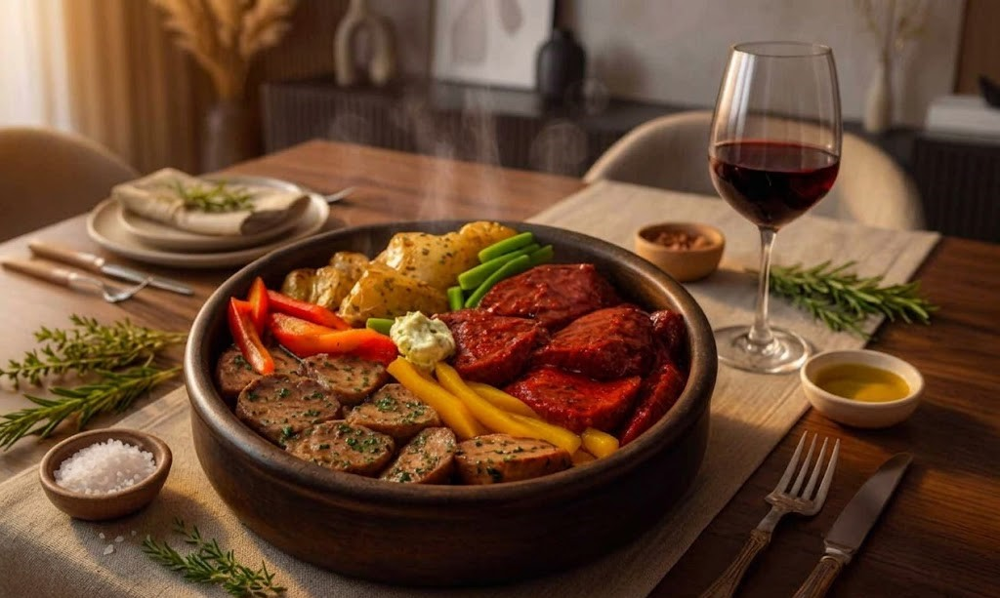
-
Belegde broodjes
Vers belegd in onze winkel, en bezorgd voor de lunch op het werk of een vergadering.
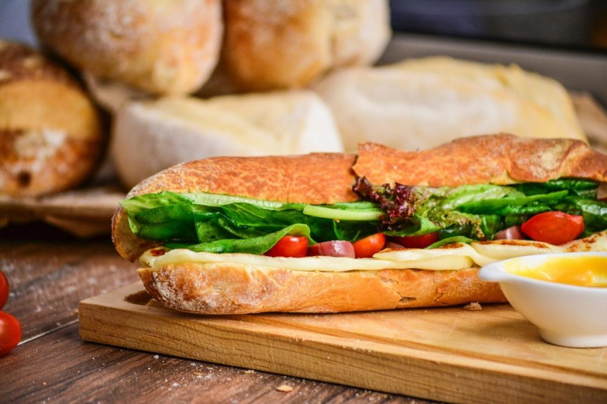
-
Veluws wild
Wild is onze specialiteit, met exclusieve producten uit eigen keuken en worstmakerij. Lees meer
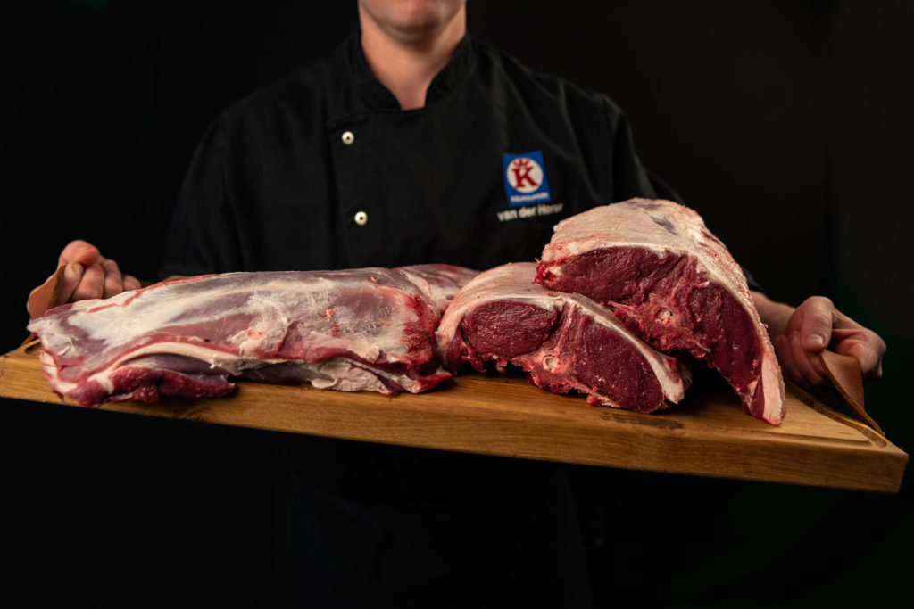
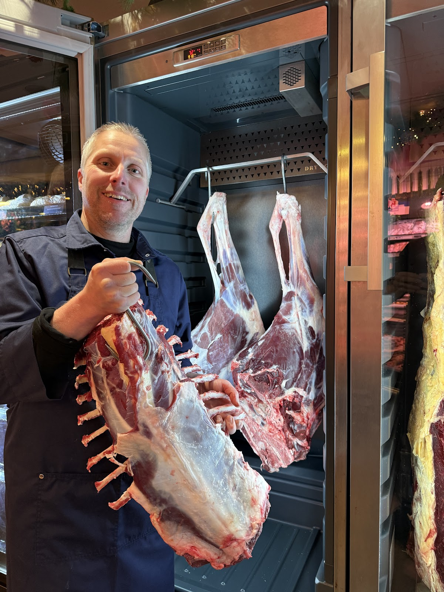
Wild, worst en dry aged
Onze worstmakerij is uitgegroeid tot een kleine productieafdeling. Drie worstmakers maken ons eigen assortiment en leveren ook maatwerk, op basis van uw wensen of uw eigen recept.
Daarnaast zijn we gespecialiseerd in wild, met exclusieve producten uit eigen keuken en worstmakerij. En in de winkel vindt u ons eigengemaakte vleeswaren en dry aged vlees.
"Een uitstekende slager: heerlijk vlees. En fantastische worsten. Zowel zijn willdworsten als zijn gewone droge worst met kruidnagel moet je zeker proberen."
Een familiebedrijf sinds 1992
In 1992 begon Geert van der Horst samen met José van der Horst een slagerij in Eerbeek. Inmiddels staat de volgende generatie aan het roer en is het team gegroeid tot 50 medewerkers: worstmakers, winkelslagers en een keukenteam dat elke dag kookt.
Marloes van der Horst regelt de administratie en de offertes, en ook de kinderen draaien al mee in de zaak. Geert en José zijn nog altijd betrokken, met raad en een scherp oog voor kwaliteit.
Wat begon als een kleine slagerij is een veelzijdig familiebedrijf geworden, waar vakmanschap en passie samenkomen.
- Sinds
- 1992
- Medewerkers
- 50
- Barbecue-opties
- 50+
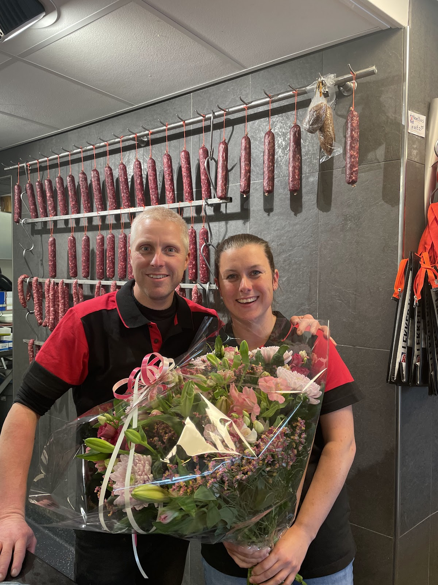
We bezorgen in de regio
Maaltijden, barbecues, buffetten en broodjes brengen we naar u toe, onder meer in Rheden, Doesburg, Eerbeek, Dieren en de plaatsen eromheen.
Twijfelt u of uw adres binnen het gebied valt? Bel ons even.
Vraag het na: 0313 651 227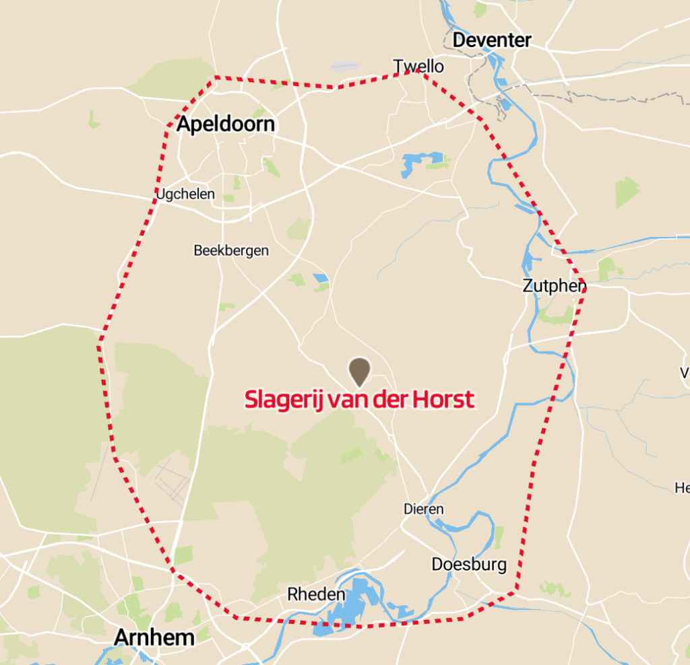
Wat klanten zeggen
4,5 sterren uit 122 reviews op Google.
★★★★★
"Supervriendelijke medewerkers, snelle bediening. Oke het vlees en de kip zijn behoorlijk aan de prijs maar daar krijg je ook écht iets lekkers voor. Ik ben enthousiast."
★★★★★
"Voor een verjaardagsfeest in Klarenbeek heb ik een buffet besteld voor 20 personen ('buffet José'). Dit was heel erg lekker, gevarieerd en van hoge kwaliteit. Ook was het ruimschoots voldoende."
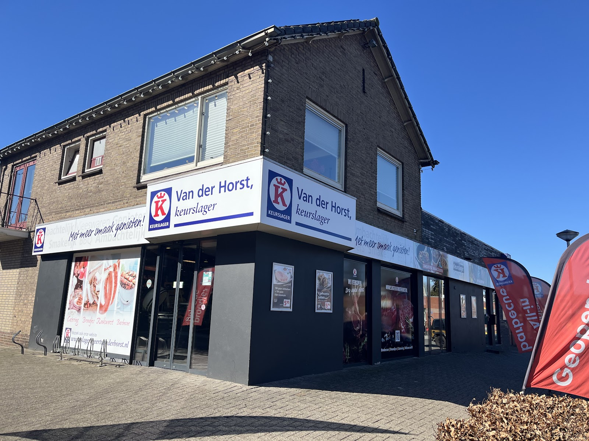
Kom langs
Kloosterstraat 46961 WT Eerbeek
Route plannen
| Maandag | 08:00 – 18:00 |
| Dinsdag | 08:00 – 18:00 |
| Woensdag | 08:00 – 18:00 |
| Donderdag | 08:00 – 18:00 |
| Vrijdag | 08:00 – 18:00 |
| Zaterdag | 08:00 – 16:00 |
| Zondag | Gesloten |